Contents
function varargout = v_osStepFlash(varargin) % % Validate the os models for very brief flashes on different pedestals. % % This script tests the linear and biophysical outer segment models of % photon isomerizations to photocurrent transduction that occurs in the % cone outer segments. It computes responses for brief flashes of fixed % amplitude, but presented on step pedestals of different intensities. % % STATUS as of 2/10/16. We don't have direct outer segment data for this % simulated experiment. What we do have is the parameters for a curve that % describes the measured relation between the amplitude of the transient % response to the flash on pedestal (that is the incremental response % estimated as being due to the flash. In the model, this is obtained by % simulating the response to the pedestal alone and subtracting it out. % The model (pedestal intensity versus flash response curve is reasonably close % to the one computed from the parametric curve. It would be nice to have % actual time course data to compare as well, since presumably that exists % somewhere and was used in the generation of the parametric curve. % % % 1/12/16 npc Created after separating the relevant % components from s_coneModelValidate. % 11/17/2016 jrg Converted to cone mosaic, incorporated both linear and % biophysical os models. varargout = UnitTest.runValidationRun(@ValidationFunction, nargout, varargin); end
Function implementing the isetbio validation code
function ValidationFunction(runTimeParams)
Init
ieInit;
Build stimuli
% Set the simulation time interval. In general, the stimulation time interval should % be set to a small enough value so as to avoid overflow errors. simulationTimeIntervalInSeconds = 1e-4; % Compute the simulation time axis stepOnset = 4000; % step onset stepOffset = 22000; % step offset stimPeriod = [stepOnset stepOffset]; nSamples = stepOffset+4000; flashTime = [stepOnset-3000 stepOnset+6000 stepOffset-3000]; % time of flashes flashDur = 10; % flash duration (bins) flashIntensity = 10000; % flash intensity R*/cone/sec simulationTime = (1:nSamples)*simulationTimeIntervalInSeconds; nStepIntensities = 11; stepIntensities = 50 * 2.^(1:nStepIntensities);
Compute os responses
for stepIndex = 1:nStepIntensities
Step stimulus
create step stimulus temporal profile
stepStimulusPhotonRate = zeros(nSamples, 1);
stepStimulusPhotonRate(stimPeriod(1):stimPeriod(2),1) = stepIntensities(stepIndex);
% Linear os
osCML = osLinear();
osCML.set('noise flag','none');
cmL = coneMosaic('os',osCML,'pattern', 2); % a single cone
cmL.integrationTime = simulationTimeIntervalInSeconds;
cmL.os.timeStep = simulationTimeIntervalInSeconds;
cmL.absorptions = reshape(stepStimulusPhotonRate,[1,1,length(stepStimulusPhotonRate)])*simulationTimeIntervalInSeconds;
% Compute outer segment currents.
cmL.computeCurrent('bgR',stepStimulusPhotonRate(1,1,1)./simulationTimeIntervalInSeconds);
stepCurrentLinear(stepIndex,:) = squeeze(cmL.current);
% Biophys os
osCM = osBioPhys(); % peripheral (fast) cone dynamics
osCM.set('noise flag','none');
cm = coneMosaic('os',osCM,'pattern', 2); % a single cone
cm.integrationTime = simulationTimeIntervalInSeconds;
cm.os.timeStep = simulationTimeIntervalInSeconds;
cm.absorptions = reshape(stepStimulusPhotonRate,[1,1,length(stepStimulusPhotonRate)])*simulationTimeIntervalInSeconds;
% Compute outer segment currents.
cm.computeCurrent();
stepCurrent(stepIndex,:) = squeeze(cm.current);
No current noise added.
No current noise added.
No current noise added.
No current noise added.
No current noise added.
No current noise added.
No current noise added.
No current noise added.
No current noise added.
No current noise added.
No current noise added.
Flash stimulus
create step+flash stimulus temporal profile add first pulse before the onset of the light step
stepFlashStimulusPhotonRate = stepStimulusPhotonRate;
stepFlashStimulusPhotonRate(flashTime(1):flashTime(1)+flashDur) = stepFlashStimulusPhotonRate (flashTime(1):flashTime(1)+flashDur) + flashIntensity;
% add second pulse (light decrement) during the light step
stepFlashStimulusPhotonRate(flashTime(2):flashTime(2)+flashDur) = stepFlashStimulusPhotonRate (flashTime(2):flashTime(2)+flashDur) - flashIntensity;
% add third pulse (light increment) during the light step
stepFlashStimulusPhotonRate(flashTime(3):flashTime(3)+flashDur) = stepFlashStimulusPhotonRate (flashTime(3):flashTime(3)+flashDur) + flashIntensity;
% Linear os
osCML = osLinear();
osCML.set('noise flag','none');
cmL = coneMosaic('os',osCML,'pattern', 2); % a single cone
cmL.integrationTime = simulationTimeIntervalInSeconds;
cmL.os.timeStep = simulationTimeIntervalInSeconds;
cmL.absorptions = reshape(stepFlashStimulusPhotonRate,[1,1,length(stepFlashStimulusPhotonRate)])*simulationTimeIntervalInSeconds;
% Compute outer segment currents.
cmL.computeCurrent('bgR',stepFlashStimulusPhotonRate(1,1,1)./simulationTimeIntervalInSeconds);
stepFlashCurrentLinear(stepIndex,:) = squeeze(cmL.current);
% Biophys os
osCM = osBioPhys(); % peripheral (fast) cone dynamics
osCM.set('noise flag','none');
cm = coneMosaic('os',osCM,'pattern', 2); % a single cone
cm.integrationTime = simulationTimeIntervalInSeconds;
cm.os.timeStep = simulationTimeIntervalInSeconds;
cm.absorptions = reshape(stepFlashStimulusPhotonRate,[1,1,length(stepFlashStimulusPhotonRate)])*simulationTimeIntervalInSeconds;
% Compute outer segment currents.
cm.computeCurrent();
stepFlashCurrent(stepIndex,:) = squeeze(cm.current);
% get the computed current
No current noise added.
No current noise added.
No current noise added.
No current noise added.
No current noise added.
No current noise added.
No current noise added.
No current noise added.
No current noise added.
No current noise added.
No current noise added.
Compute differences between flash and step stimuli
compute flash responses
flashOnlyLinearCurrent = squeeze(stepFlashCurrentLinear(stepIndex,:))-squeeze(stepCurrentLinear(stepIndex,:));
darkFlashLinearResponse = max(flashOnlyLinearCurrent(find((simulationTime > flashTime(1)*simulationTimeIntervalInSeconds) & (simulationTime < flashTime(1)*simulationTimeIntervalInSeconds+0.1))));
lightDecrementFlashLinearResponse(stepIndex) = min(flashOnlyLinearCurrent(find((simulationTime>flashTime(2)*simulationTimeIntervalInSeconds-0.2) & (simulationTime<flashTime(2)*simulationTimeIntervalInSeconds+0.2))));
lightIncrementFlashLinearResponse(stepIndex) = max(flashOnlyLinearCurrent(find(simulationTime>1.5)));
flashOnlyCurrent = squeeze(stepFlashCurrent(stepIndex,:))-squeeze(stepCurrent(stepIndex,:));
darkFlashResponse = max(flashOnlyCurrent(find((simulationTime > flashTime(1)*simulationTimeIntervalInSeconds) & (simulationTime < flashTime(1)*simulationTimeIntervalInSeconds+0.1))));
lightDecrementFlashResponse(stepIndex) = min(flashOnlyCurrent(find((simulationTime>flashTime(2)*simulationTimeIntervalInSeconds-0.2) & (simulationTime<flashTime(2)*simulationTimeIntervalInSeconds+0.2))));
lightIncrementFlashResponse(stepIndex) = max(flashOnlyCurrent(find(simulationTime>1.5)));
Plot each step and flash level
if (runTimeParams.generatePlots) if (stepIndex == 1) h = figure(1); clf; set(h, 'Position', [10 10 900 1200]); end % plot stimulus on the left subplot(nStepIntensities,3,(stepIndex-1)*3+1); plot(simulationTime, stepFlashStimulusPhotonRate, 'r-', 'LineWidth', 2.0); set(gca, 'XLim', [simulationTime(1) simulationTime(end)], 'YLim', [0 12e4], 'YTick', []); if (stepIndex == nStepIntensities) xlabel('time (sec)','FontSize',12); else set(gca, 'XTickLabel', {}); end ylabel('isomer. rate','FontSize',12); title(sprintf('step: %d R*/sec',stepIntensities(stepIndex)), 'FontSize',12); % plot compound response in the middle subplot(nStepIntensities,3,(stepIndex-1)*3+2); plot(simulationTime, squeeze(stepFlashCurrentLinear(stepIndex,:)), 'g-', 'LineWidth', 2.0); hold on plot(simulationTime, squeeze(stepCurrentLinear(stepIndex,:)), 'b:', 'LineWidth', 2.0); plot(simulationTime, squeeze(stepFlashCurrent(stepIndex,:)), 'k-', 'LineWidth', 2.0); hold on plot(simulationTime, squeeze(stepCurrent(stepIndex,:)), 'm:', 'LineWidth', 2.0); set(gca, 'XLim', [simulationTime(1) simulationTime(end)]); if (stepIndex == nStepIntensities) xlabel('time (sec)','FontSize',12); else set(gca, 'XTickLabel', {}); end ylabel('pAmps','FontSize',12); title('compound response', 'FontSize',12); % plot flash-only response on the right subplot(nStepIntensities,3,(stepIndex-1)*3+3); hold on; plot(simulationTime, flashOnlyLinearCurrent, 'g-', 'LineWidth', 2.0); plot(simulationTime, flashOnlyCurrent, 'k-', 'LineWidth', 2.0); set(gca, 'XLim', [simulationTime(1) simulationTime(end)], 'YLim', [-2.2 2.2]); if (stepIndex == nStepIntensities) xlabel('time (sec)','FontSize',12); else set(gca, 'XTickLabel', {}); end ylabel('pAmps','FontSize',12); title('flash responses', 'FontSize',12); drawnow; end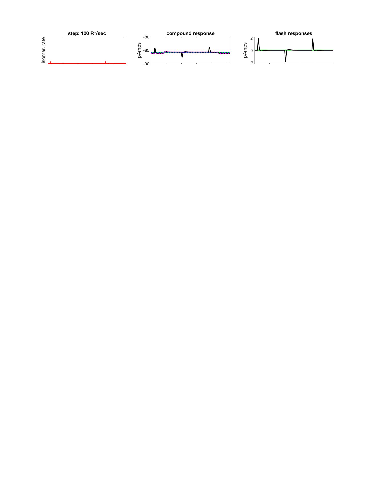 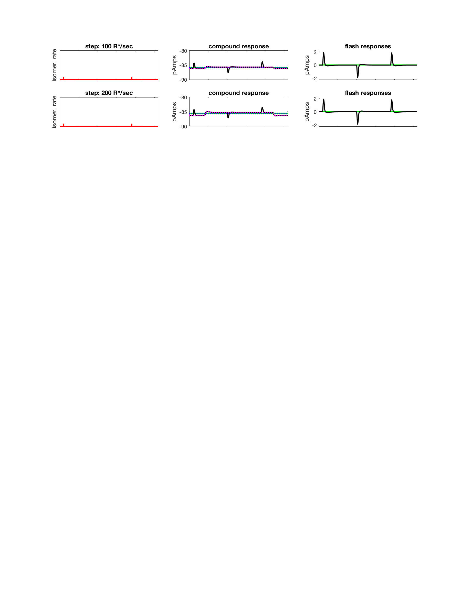 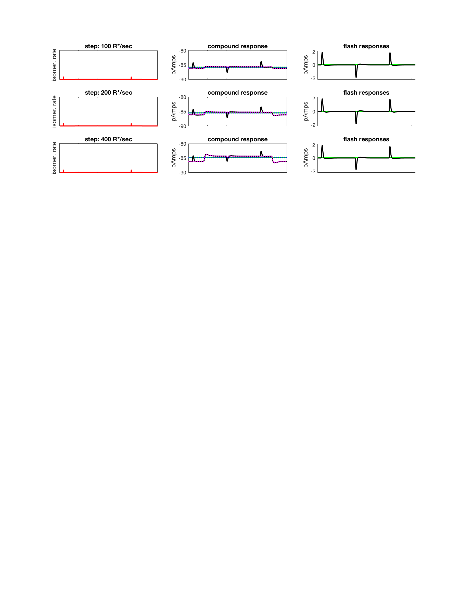 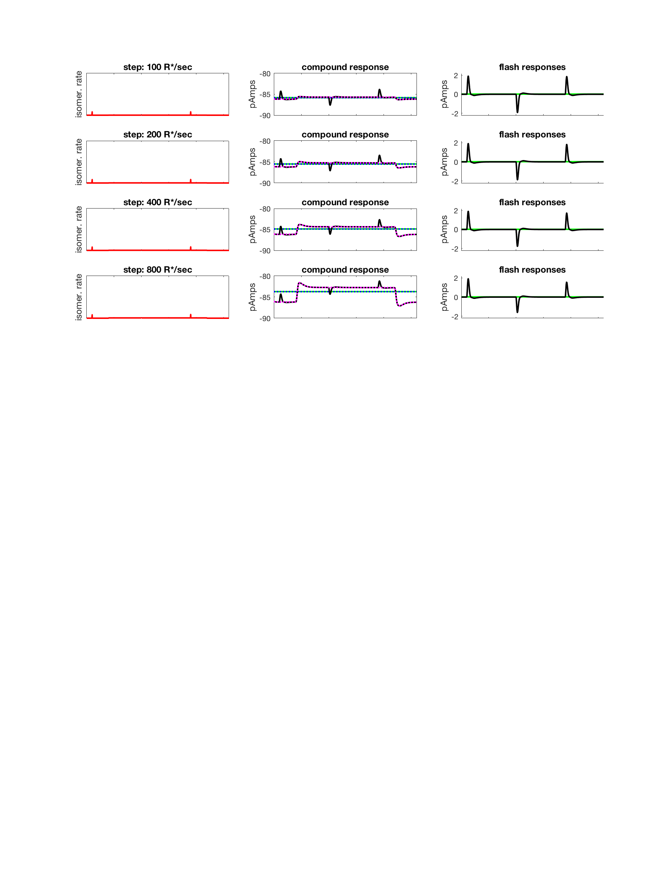 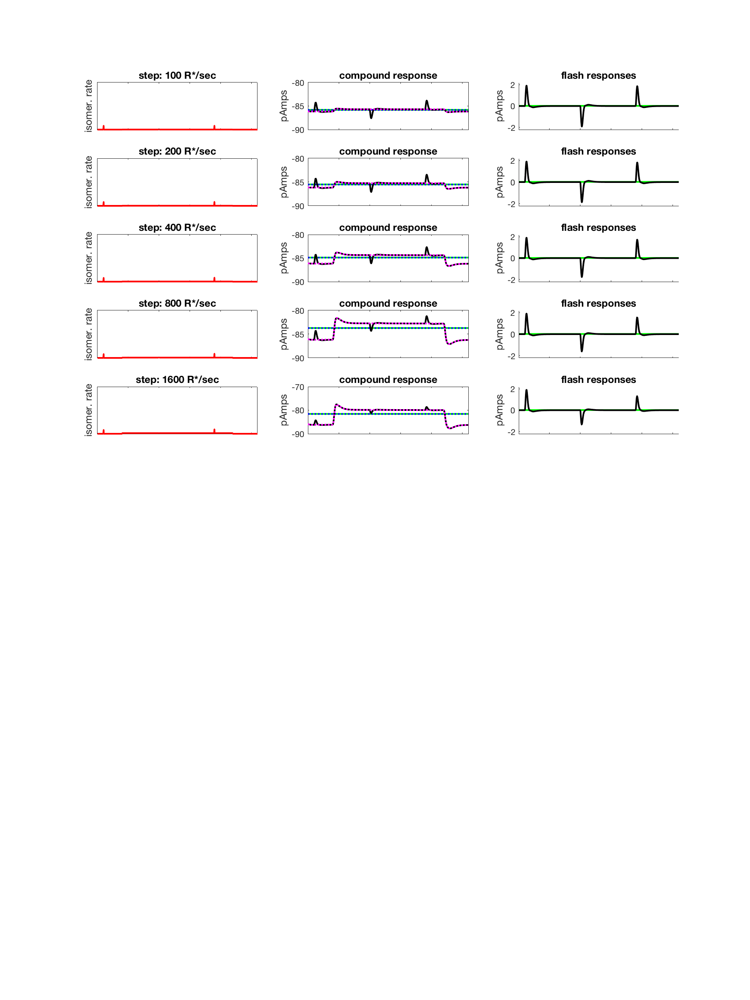 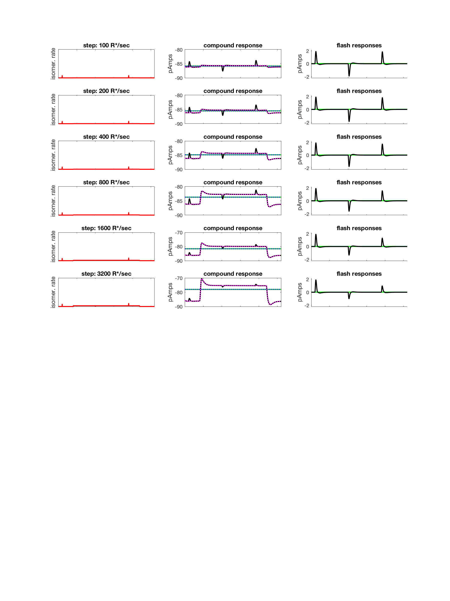 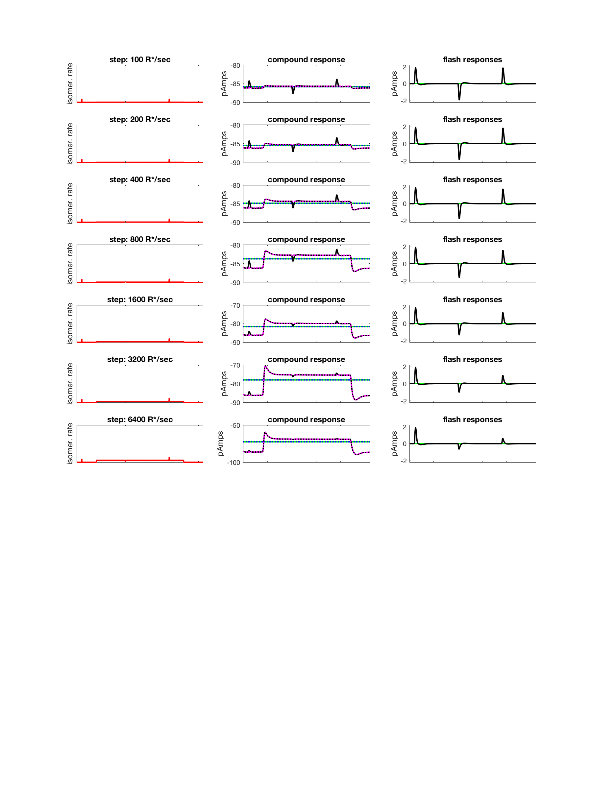 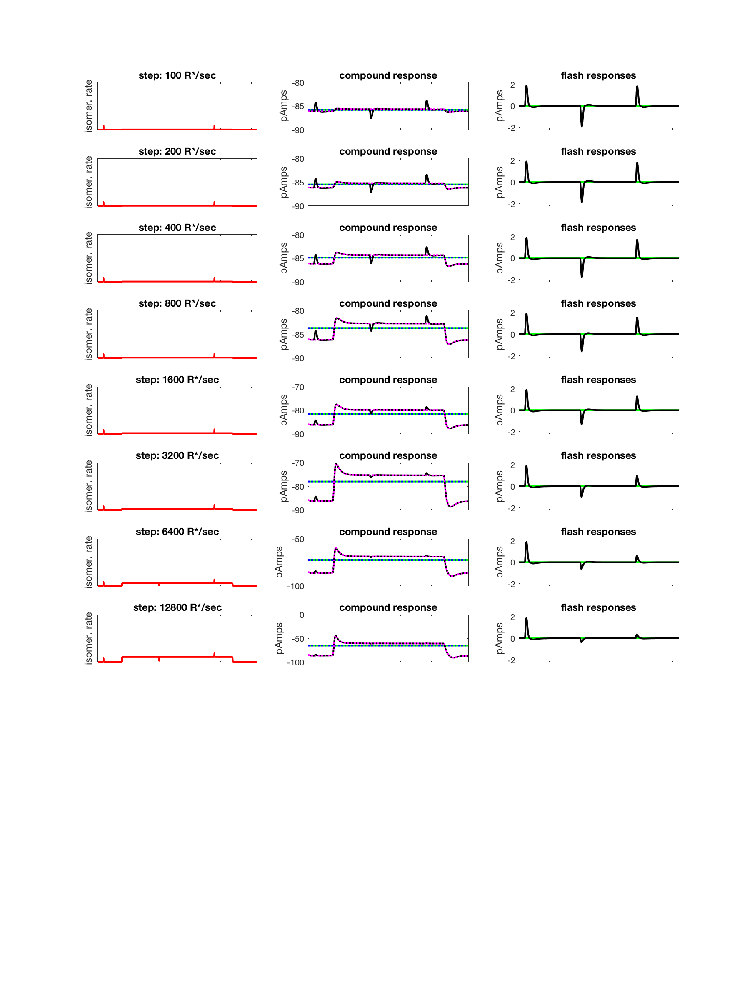 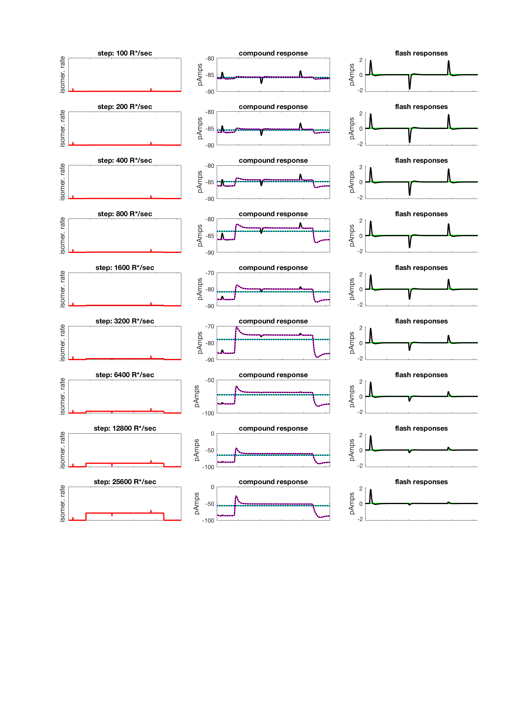
 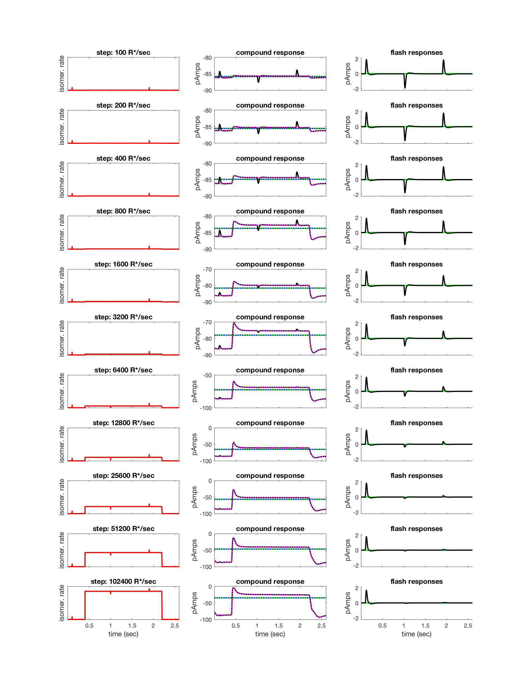
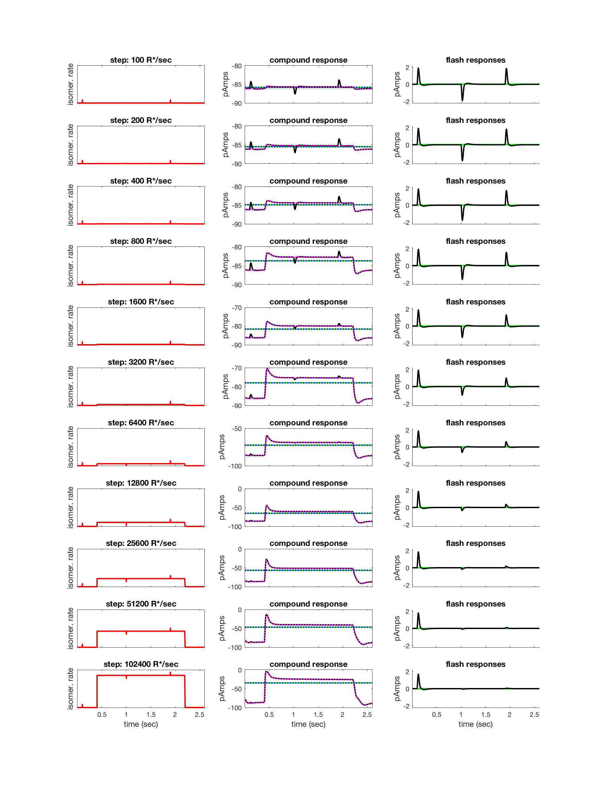 end % stepIndex
Plot summary ratios
if (runTimeParams.generatePlots) % compute sensitivity vs background intensity relation for neural data % with half desens around 2500 (Angueyra and Rieke, 2013) coef = [2500]; neuralDataFit = 10.^(weberFechner(coef, stepIntensities)); % can also fit the same model to the simulated data, but we are not % currently plotting this. wfcoefLinear = nlinfit(stepIntensities, log10(lightIncrementFlashLinearResponse/darkFlashLinearResponse), 'weberFechner', coef); modelLinearDataFit = 10.^(weberFechner(wfcoefLinear, stepIntensities)); wfcoef = nlinfit(stepIntensities, log10(lightIncrementFlashResponse/darkFlashResponse), 'weberFechner', coef); modelDataFit = 10.^(weberFechner(wfcoef, stepIntensities)); h = figure(2); clf; set(h, 'Position', [10 10 1000 500]); subplot(1,2,1); loglog(stepIntensities, -lightDecrementFlashLinearResponse/darkFlashLinearResponse, 'go-', 'MarkerSize', 12, 'MarkerFaceColor', [1 0.8 0.8]); hold on loglog(stepIntensities, -lightDecrementFlashResponse/darkFlashResponse, 'ro-', 'MarkerSize', 12, 'MarkerFaceColor', [1 0.8 0.8]); title('light decrement flash sensitivity'); % set(gca, 'XLim', [stepIntensities(1) stepIntensities(end)], 'YLim', [0 1.1], 'FontSize', 12); xlabel('step intensity (R*/sec)', 'FontSize', 12); ylabel('flash response / dark flash response','FontSize', 12); % Likely some sort of problem with the linear model and its initial % current, see darkFlashResponse vs. darkFlashResponseLinear. % figure; plot(flashOnlyLinearCurrent); hold on; plot(flashOnlyCurrent); % figure; plot(stepFlashCurrentLinear(1,:)); hold on; plot(stepFlashCurrent(1,:)) subplot(1,2,2); loglog(stepIntensities, lightIncrementFlashLinearResponse/darkFlashLinearResponse, 'ko-', 'MarkerSize', 12, 'MarkerFaceColor', [0.8 1 0.8]); hold on; loglog(stepIntensities, lightIncrementFlashResponse/darkFlashResponse, 'bo-', 'MarkerSize', 12, 'MarkerFaceColor', [0.8 0.8 1.0]); %loglog(stepIntensities, modelDataFit, 'b-', 'LineWidth', 2.0); %loglog(stepIntensities, modelLinearDataFit, 'b-', 'LineWidth', 2.0); loglog(stepIntensities, neuralDataFit, 'm-', 'LineWidth', 2.0); title('light increment flash'); legend('lienar model', 'biophys model', 'neural data'); % set(gca, 'XLim', [stepIntensities(1) stepIntensities(end)], 'YLim', [0 1.1], 'FontSize', 12); xlabel('step intensity (R*/sec)', 'FontSize', 12); ylabel('flash response / dark flash response','FontSize', 12); end
Warning: Negative data ignored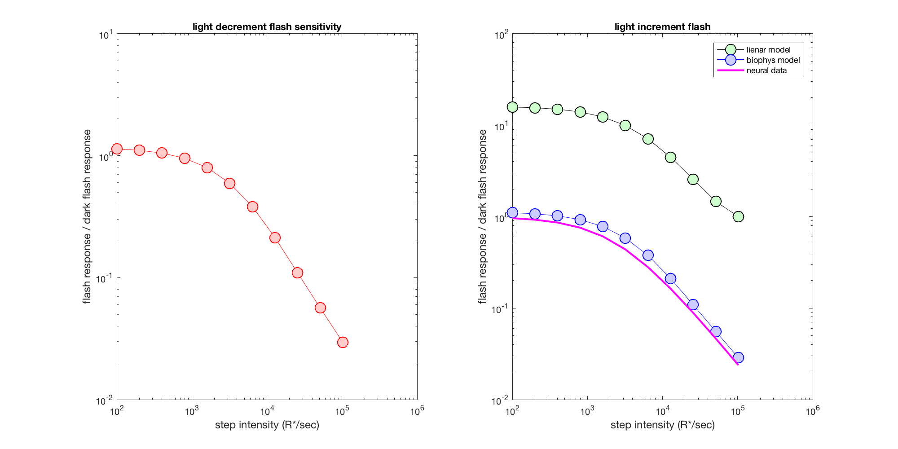
Save validation data
UnitTest.validationData('stepCurrentLinear', stepCurrentLinear); UnitTest.validationData('stepFlashCurrentLinear',stepFlashCurrentLinear); UnitTest.validationData('stepCurrent', stepCurrent); UnitTest.validationData('stepFlashCurrent',stepFlashCurrent); UnitTest.validationData('simulationTime', simulationTime); UnitTest.validationData('stimPeriod', stimPeriod); UnitTest.validationData('flashTime', flashTime); UnitTest.validationData('flashDur', flashDur); UnitTest.validationData('flashIntensity', flashIntensity); UnitTest.validationData('stepIntensities',stepIntensities);
end